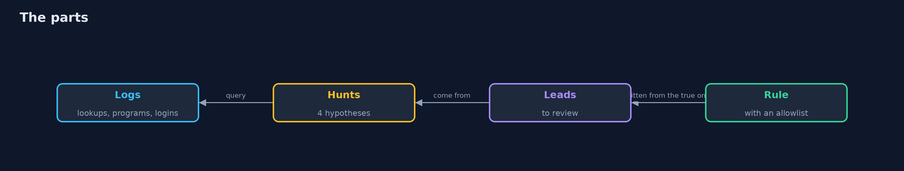
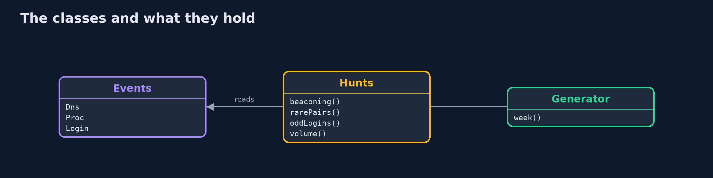
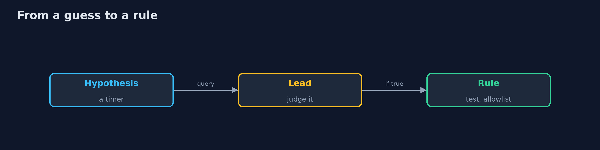
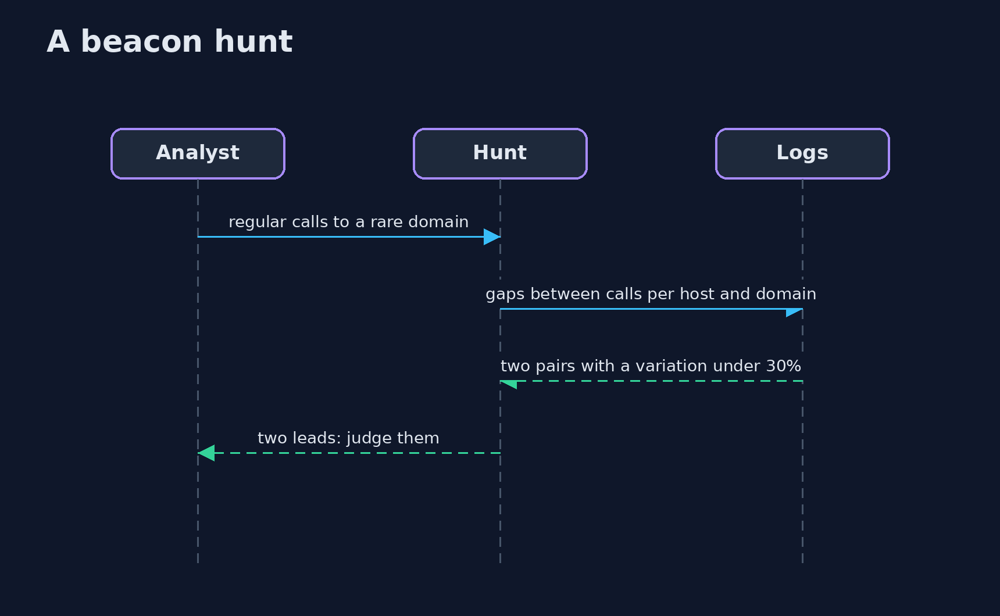

Threat Hunting
src/main/java/com/jk/explore/security/threathunt/
├── Events.java The three kinds of record that the hunts read: name lookups with the bytes sent out, process starts, and logins
├── Generator.java A made-up but seeded week at a bank: 40 workstations, 5 servers, 60 users, a lot of ordinary activity, four attacks, and benign things that look like attacks
├── Hunts.java The hunts: each starts from a hypothesis about what an intruder does and asks the data for leads that a person then judges
└── ThreatHuntingDemo.java What really happened in the week: the leads that are attacks
A simulated week at a bank has 74,831 name lookups, 11,204 process starts and 803 logins, with 4 planted attacks (a beacon, a shell started by a document, an upload in bulk, a stolen service account) and benign things that look like them; looking only for regular calls gives 87 leads, adding rarity gives 2 (1 attack, 1 heartbeat), a limit that is too strict misses the beacon's 10% jitter, rare parent and child pairs give 3 leads (2 attacks), a new address at a new hour gives 1 lead (an attack), and bulk volume gives 2 leads (1 attack); the four hunts hand over 7 leads to review and find 4 of the 4 attacks the logs can show, while a fifth attack, a scheduled task, is in no log; the beacon hunt becomes a rule that raises 1 false alert on a clean week until the heartbeat is allowlisted.
A hunt starts with a guess about what an intruder does, not with an alert. This project simulates a week at a bank (40 workstations, 5 servers, 60 users, about 74,000 name lookups, 11,000 process starts and 800 logins) with four attacks hidden in it and several ordinary things that look like attacks, and runs four hunts in Java: a timer in the lookups (beaconing), programs nobody else runs (stacking parent and child pairs), accounts in odd places and data leaving in bulk. Each hunt gives leads; a person judges them against what really happened. It needs only the JDK: ./gradlew test, then ./gradlew run.
What it shows:
- Beaconing. Regular calls alone give 87 leads; regular calls to a rare domain give 2: the beacon and a monitoring heartbeat. A limit on regularity that is too strict loses the beacon's 10% jitter.
- Rare pairs. Pairs seen at most twice give 3 leads: a document starting a shell, the shell asking who the user is, and an administrator's ipconfig.
- Odd logins and bulk volume. A new address at a new hour gives 1 lead; a host-day far above its own median gives 2, one of them a patch download.
- The scoreboard. 7 leads, 4 of 4 attacks the logs can show; the fifth attack, a scheduled task, is in no log: a gap in the data, not in the hunt.
- From a hunt to a rule. The beacon hunt as a rule raises 1 false alert on a clean week until the heartbeat is allowlisted.
Maps to: MITRE ATT&CK T1071 (application layer protocol), T1059 (command interpreters), T1078 (valid accounts), T1041 (exfiltration over C2) · NIST CSF 2.0 DE.AE and DE.CM · SANS PEAK threat hunting framework.
The idea in everyday terms
A night watchman who does not wait for the alarm. She has a theory that someone is visiting the building on a schedule, so she reads the visitor book for names that come at regular times. Most of what she finds is the cleaner. She writes down the cleaner's name so that she does not stop for it again, and she writes the rule for the one she did not know.
The scenario
A bank's security team has a week of logs and a worry that someone is already inside. The demo gives them four hypotheses to test and counts what each one turns up.
Run
./gradlew run
The demo tells the story in 5 acts, each printing exact numbers that the tests check:
| Act | What it shows |
|---|---|
| 1. The week | A simulated week with 74,831 lookups, 11,204 process starts and 803 logins, and 4 planted attacks. |
| 2. Hunt 1: a timer in the lookups | Regular calls alone give 87 leads; adding rarity gives 2; a limit that is too strict loses the beacon. |
| 3. Hunts 2 and 3: pairs and accounts | Rare parent and child pairs give 3 leads, 2 of them attacks; a new address at a new hour gives 1 lead, an attack. |
| 4. Hunt 4 and the scoreboard | Bulk volume gives 2 leads; the four hunts hand over 7 leads and find 4 of the 4 attacks the logs can show. |
| 5. From a hunt to a rule | The beacon hunt as a rule raises 1 false alert on a clean week until the heartbeat is allowlisted. |
Test
./gradlew test
9 tests in DemoRunsTest, HuntsTest. The hunts and the generator are tested with the JDK only. The demo is compared with its golden output.
What the simulation got right, and what it left out
The week is made by a seeded generator, so each run is the same; the attacks and the ordinary things are planted and known. The names and addresses are invented and the domains end in .invalid or .example.
Technologies and versions
Every version below is pinned in the project's build files and was the latest stable release when the project was built.
| Technology | Version | Used for |
|---|---|---|
| Java | 25 | the language and runtime; a Gradle toolchain finds or downloads the JDK |
| Gradle | 9.8.1 (wrapper) | build and run; nothing to install, the wrapper downloads it |
| org.junit.jupiter:junit-jupiter | 6.1.3, set by junit-bom | JUnit 5: the tests (tests only) |
| org.junit.platform:junit-platform-launcher | 6.1.3, set by junit-bom | JUnit platform launcher, which Gradle needs to run the tests (tests only) |
| videokit | repository tool (tools/videokit) |
the narrated video and animation: Piper en_US-amy-medium, speed 0.8, longer pauses (the amy-slow voice) |
Learning Material
| Document | What it is for |
|---|---|
| Problem statement | the situation and what the project must show |
| Prerequisites | what you need to know first |
| Threat Hunting, explained | the acts in prose |
| Session guide | a one-hour lesson with exercises |
| Animated walkthrough | the acts step by step, narrated |
| Threat model | what is protected, who could harm it, and how, using STRIDE |
| Spec | what this project must be true of |
| Expected output | the golden demo output every test and every port checks against |
The idea in one picture
A hypothesis becomes a query and a query becomes leads.

Where each piece sits
The events, the hunts and the week.

How the data moves
Each step uses what the one before taught.

Who calls whom, in order

Video
video/threat-hunting-explained.mp4 (with .m4a audio and .srt subtitles) is built by video/build_video.sh. Rendered media is not committed.
What it costs
- Every lead costs a person's time, and most are not attacks.
- A hunt can only look at data that exists.
- Thresholds are guesses that need tuning on your own data.
- Benign periodic things such as heartbeats and updates look like beacons.
- A hunt is not repeatable until it is written down as a rule.
When this is too much
A small team with managed detection can start with the vendor's content. Hunt when you have good logs, a theory about an adversary, and people with time to follow leads.
Where you have already met this
- A search for a bad IP address from a news article.
- A dashboard of top talkers that nobody reads.
- An alert threshold set once and never tuned.
- A hunt done by one person and never written down.
Where this sits
This is a project of the detection-engineering module, after detection-as-code, which turns what a hunt finds into tested rules.